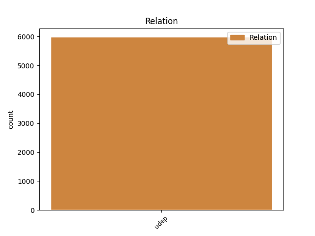
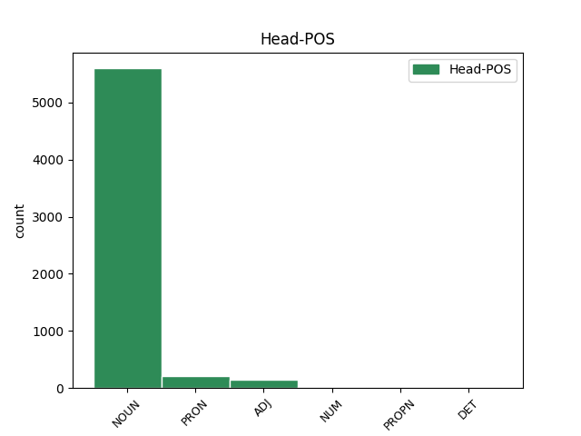
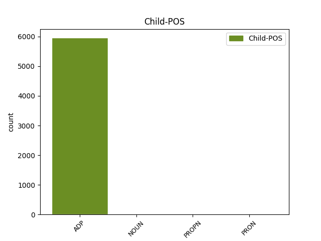

Distribution of features within this leaf



Agreement Rules sorted by frequency.
- When the dependent token is the underspecified dependency(udep) of the head token, and the head token is ADJ
1 În _ _ _ _ 0 _ _ _
2 1989 _ _ _ _ 0 _ _ _
3 , _ _ _ _ 0 _ _ _
4 rețeaua _ _ _ _ 0 _ _ _
5 electrică _ _ _ _ 0 _ _ _
6 de _ _ _ _ 0 _ _ _
7 tramvai _ _ _ _ 0 _ _ _
8 din _ _ _ _ 0 _ _ _
9 Iași _ _ _ _ 0 _ _ _
10 a _ _ _ _ 0 _ _ _
11 atins _ _ _ _ 0 _ _ _
12 maxima maxim ADJ Afpfsry Case=Acc,Nom|Definite=Def|Degree=Pos|Gender=Fem|Number=Sing 0 _ _ _
13 dezvoltare dezvoltare NOUN Ncfsrn Case=Acc,Nom|Definite=Ind|Gender=Fem|Number=Sing 12 udep _ SpaceAfter=No
14 , _ _ _ _ 0 _ _ _
15 cumulând _ _ _ _ 0 _ _ _
16 35 _ _ _ _ 0 _ _ _
17 km _ _ _ _ 0 _ _ _
18 de _ _ _ _ 0 _ _ _
19 cale _ _ _ _ 0 _ _ _
20 dublă _ _ _ _ 0 _ _ _
21 activă _ _ _ _ 0 _ _ _
22 pe _ _ _ _ 0 _ _ _
23 trasee _ _ _ _ 0 _ _ _
24 . _ _ _ _ 0 _ _ _
1 Cu cu ADP Spsa AdpType=Prep|Case=Acc 12 udep _ _
2 ajutorul _ _ _ _ 0 _ _ _
3 culturilor _ _ _ _ 0 _ _ _
4 celulare _ _ _ _ 0 _ _ _
5 de _ _ _ _ 0 _ _ _
6 la _ _ _ _ 0 _ _ _
7 nivelul _ _ _ _ 0 _ _ _
8 măduvei _ _ _ _ 0 _ _ _
9 osoase _ _ _ _ 0 _ _ _
10 umane _ _ _ _ 0 _ _ _
11 , _ _ _ _ 0 _ _ _
12 se sine PRON Px3--a--------w Case=Acc|Person=3|PronType=Prs|Reflex=Yes|Strength=Weak 0 _ _ _
13 poate _ _ _ _ 0 _ _ _
14 demonstra _ _ _ _ 0 _ _ _
15 că _ _ _ _ 0 _ _ _
16 epoetina _ _ _ _ 0 _ _ _
17 alfa _ _ _ _ 0 _ _ _
18 stimulează _ _ _ _ 0 _ _ _
19 specific _ _ _ _ 0 _ _ _
20 eritropoeza _ _ _ _ 0 _ _ _
21 și _ _ _ _ 0 _ _ _
22 nu _ _ _ _ 0 _ _ _
23 afectează _ _ _ _ 0 _ _ _
24 leucopoeza _ _ _ _ 0 _ _ _
25 . _ _ _ _ 0 _ _ _
Disagree Examples:
1 Din _ _ _ _ 0 _ _ _
2 cauza _ _ _ _ 0 _ _ _
3 atmosferei atmosferă NOUN Ncfsoy Case=Dat,Gen|Definite=Def|Gender=Fem|Number=Sing 0 _ _ _
4 de de ADP Spsa AdpType=Prep|Case=Acc 3 udep _ _
5 gazon _ _ _ _ 0 _ _ _
6 de _ _ _ _ 0 _ _ _
7 hochei _ _ _ _ 0 _ _ _
8 și _ _ _ _ 0 _ _ _
9 de _ _ _ _ 0 _ _ _
10 băi _ _ _ _ 0 _ _ _
11 reci _ _ _ _ 0 _ _ _
12 și _ _ _ _ 0 _ _ _
13 de _ _ _ _ 0 _ _ _
14 excursii _ _ _ _ 0 _ _ _
15 în _ _ _ _ 0 _ _ _
16 grup _ _ _ _ 0 _ _ _
17 și _ _ _ _ 0 _ _ _
18 în _ _ _ _ 0 _ _ _
19 general _ _ _ _ 0 _ _ _
20 de _ _ _ _ 0 _ _ _
21 castitate _ _ _ _ 0 _ _ _
22 pe _ _ _ _ 0 _ _ _
23 care _ _ _ _ 0 _ _ _
24 reușea _ _ _ _ 0 _ _ _
25 s- _ _ _ _ 0 _ _ _
26 o _ _ _ _ 0 _ _ _
27 creeze _ _ _ _ 0 _ _ _
28 în _ _ _ _ 0 _ _ _
29 jurul _ _ _ _ 0 _ _ _
30 ei _ _ _ _ 0 _ _ _
31 . _ _ _ _ 0 _ _ _
1 Oamenii om NOUN Ncmpry Case=Acc,Nom|Definite=Def|Gender=Masc|Number=Plur 0 _ _ _
2 de de ADP Spsa AdpType=Prep|Case=Acc 1 udep _ _
3 pe _ _ _ _ 0 _ _ _
4 scaune _ _ _ _ 0 _ _ _
5 scoseseră _ _ _ _ 0 _ _ _
6 un _ _ _ _ 0 _ _ _
7 murmur _ _ _ _ 0 _ _ _
8 văzând _ _ _ _ 0 _ _ _
9 salopeta _ _ _ _ 0 _ _ _
10 neagră _ _ _ _ 0 _ _ _
11 a _ _ _ _ 0 _ _ _
12 unui _ _ _ _ 0 _ _ _
13 membru _ _ _ _ 0 _ _ _
14 al _ _ _ _ 0 _ _ _
15 Partidului _ _ _ _ 0 _ _ _
16 Interior _ _ _ _ 0 _ _ _
17 . _ _ _ _ 0 _ _ _
1 În _ _ _ _ 0 _ _ _
2 ciuda _ _ _ _ 0 _ _ _
3 aspectului _ _ _ _ 0 _ _ _
4 său _ _ _ _ 0 _ _ _
5 înfricoșător _ _ _ _ 0 _ _ _
6 , _ _ _ _ 0 _ _ _
7 avea _ _ _ _ 0 _ _ _
8 un _ _ _ _ 0 _ _ _
9 anume _ _ _ _ 0 _ _ _
10 farmec _ _ _ _ 0 _ _ _
11 în _ _ _ _ 0 _ _ _
12 comportament _ _ _ _ 0 _ _ _
13 , _ _ _ _ 0 _ _ _
14 o _ _ _ _ 0 _ _ _
15 mișcare mișcare NOUN Ncfsrn Case=Acc,Nom|Definite=Ind|Gender=Fem|Number=Sing 0 _ _ _
16 de de ADP Spsa AdpType=Prep|Case=Acc 15 udep _ _
17 a _ _ _ _ 0 _ _ _
18 -și _ _ _ _ 0 _ _ _
19 potrivi _ _ _ _ 0 _ _ _
20 mai _ _ _ _ 0 _ _ _
21 bine _ _ _ _ 0 _ _ _
22 ochelarii _ _ _ _ 0 _ _ _
23 pe _ _ _ _ 0 _ _ _
24 nas _ _ _ _ 0 _ _ _
25 care _ _ _ _ 0 _ _ _
26 , _ _ _ _ 0 _ _ _
27 curios _ _ _ _ 0 _ _ _
28 , _ _ _ _ 0 _ _ _
29 te _ _ _ _ 0 _ _ _
30 lăsa _ _ _ _ 0 _ _ _
31 fără _ _ _ _ 0 _ _ _
32 replică _ _ _ _ 0 _ _ _
33 - _ _ _ _ 0 _ _ _
34 deși _ _ _ _ 0 _ _ _
35 nu _ _ _ _ 0 _ _ _
36 era _ _ _ _ 0 _ _ _
37 clar _ _ _ _ 0 _ _ _
38 în _ _ _ _ 0 _ _ _
39 ce _ _ _ _ 0 _ _ _
40 fel _ _ _ _ 0 _ _ _
41 - _ _ _ _ 0 _ _ _
42 un _ _ _ _ 0 _ _ _
43 gest _ _ _ _ 0 _ _ _
44 ciudat _ _ _ _ 0 _ _ _
45 de _ _ _ _ 0 _ _ _
46 manierat _ _ _ _ 0 _ _ _
47 . _ _ _ _ 0 _ _ _
1 Era _ _ _ _ 0 _ _ _
2 un _ _ _ _ 0 _ _ _
3 gest _ _ _ _ 0 _ _ _
4 care _ _ _ _ 0 _ _ _
5 , _ _ _ _ 0 _ _ _
6 dacă _ _ _ _ 0 _ _ _
7 ar _ _ _ _ 0 _ _ _
8 mai _ _ _ _ 0 _ _ _
9 fi _ _ _ _ 0 _ _ _
10 gândit _ _ _ _ 0 _ _ _
11 cineva _ _ _ _ 0 _ _ _
12 în _ _ _ _ 0 _ _ _
13 acești _ _ _ _ 0 _ _ _
14 termeni _ _ _ _ 0 _ _ _
15 , _ _ _ _ 0 _ _ _
16 ți- _ _ _ _ 0 _ _ _
17 ar _ _ _ _ 0 _ _ _
18 fi _ _ _ _ 0 _ _ _
19 putut _ _ _ _ 0 _ _ _
20 aminti _ _ _ _ 0 _ _ _
21 un _ _ _ _ 0 _ _ _
22 nobil _ _ _ _ 0 _ _ _
23 din _ _ _ _ 0 _ _ _
24 secolul _ _ _ _ 0 _ _ _
25 optsprezece _ _ _ _ 0 _ _ _
26 care _ _ _ _ 0 _ _ _
27 -ți _ _ _ _ 0 _ _ _
28 întindea _ _ _ _ 0 _ _ _
29 cutia cutie NOUN Ncfsry Case=Acc,Nom|Definite=Def|Gender=Fem|Number=Sing 0 _ _ _
30 de de ADP Spsa AdpType=Prep|Case=Acc 29 udep _ _
31 prizat _ _ _ _ 0 _ _ _
32 . _ _ _ _ 0 _ _ _
1 Se _ _ _ _ 0 _ _ _
2 simțea _ _ _ _ 0 _ _ _
3 foarte _ _ _ _ 0 _ _ _
4 tare _ _ _ _ 0 _ _ _
5 atras _ _ _ _ 0 _ _ _
6 de _ _ _ _ 0 _ _ _
7 el _ _ _ _ 0 _ _ _
8 , _ _ _ _ 0 _ _ _
9 nu _ _ _ _ 0 _ _ _
10 numai _ _ _ _ 0 _ _ _
11 fiindcă _ _ _ _ 0 _ _ _
12 era _ _ _ _ 0 _ _ _
13 intrigat _ _ _ _ 0 _ _ _
14 de _ _ _ _ 0 _ _ _
15 contrastul contrast NOUN Ncmsry Case=Acc,Nom|Definite=Def|Gender=Masc|Number=Sing 0 _ _ _
16 dintre dintre ADP Spsa AdpType=Prep|Case=Acc 15 udep _ _
17 aspectul _ _ _ _ 0 _ _ _
18 lui _ _ _ _ 0 _ _ _
19 rafinat _ _ _ _ 0 _ _ _
20 și _ _ _ _ 0 _ _ _
21 fizicul _ _ _ _ 0 _ _ _
22 de _ _ _ _ 0 _ _ _
23 boxer _ _ _ _ 0 _ _ _
24 profesionist _ _ _ _ 0 _ _ _
25 , _ _ _ _ 0 _ _ _
26 ci _ _ _ _ 0 _ _ _
27 mai _ _ _ _ 0 _ _ _
28 degrabă _ _ _ _ 0 _ _ _
29 din _ _ _ _ 0 _ _ _
30 cauza _ _ _ _ 0 _ _ _
31 unei _ _ _ _ 0 _ _ _
32 convingeri _ _ _ _ 0 _ _ _
33 ținute _ _ _ _ 0 _ _ _
34 secretă _ _ _ _ 0 _ _ _
35 - _ _ _ _ 0 _ _ _
36 sau _ _ _ _ 0 _ _ _
37 poate _ _ _ _ 0 _ _ _
38 nici _ _ _ _ 0 _ _ _
39 măcar _ _ _ _ 0 _ _ _
40 dintr- _ _ _ _ 0 _ _ _
41 o _ _ _ _ 0 _ _ _
42 convingere _ _ _ _ 0 _ _ _
43 , _ _ _ _ 0 _ _ _
44 ci _ _ _ _ 0 _ _ _
45 dintr- _ _ _ _ 0 _ _ _
46 o _ _ _ _ 0 _ _ _
47 speranță _ _ _ _ 0 _ _ _
48 - _ _ _ _ 0 _ _ _
49 și _ _ _ _ 0 _ _ _
50 anume _ _ _ _ 0 _ _ _
51 că _ _ _ _ 0 _ _ _
52 ortodoxia _ _ _ _ 0 _ _ _
53 politică _ _ _ _ 0 _ _ _
54 a _ _ _ _ 0 _ _ _
55 lui _ _ _ _ 0 _ _ _
56 O'Brien _ _ _ _ 0 _ _ _
57 nu _ _ _ _ 0 _ _ _
58 era _ _ _ _ 0 _ _ _
59 perfectă _ _ _ _ 0 _ _ _
60 . _ _ _ _ 0 _ _ _